706 青年空间-活动介绍
一、48小时生活实验室
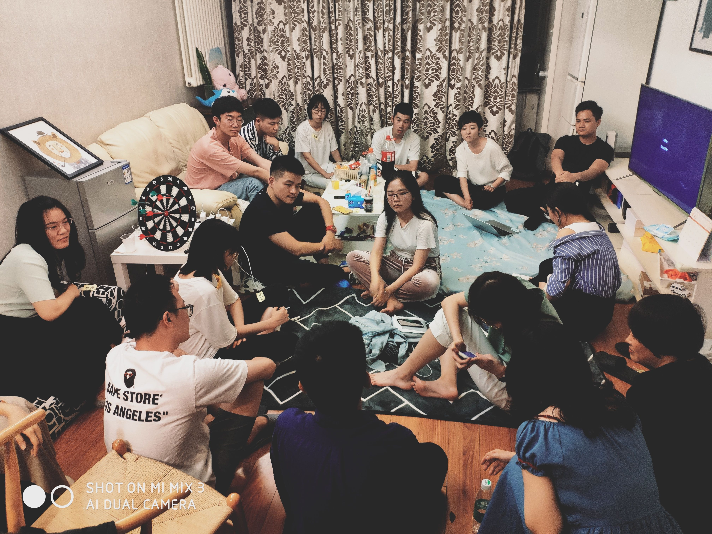
48小时生活实验室是推出的生活方式探索项目
每期我们邀请一群年轻人，在一个实体空间共同生活48个小时
期间，我们将共同完成一次关于生活的实验或创作
让年轻人，打破原有生活环境的局限，突破互联网虚拟社交的屏障
聚集在一起共同探索生活的各种可能性
二、706文化沙龙
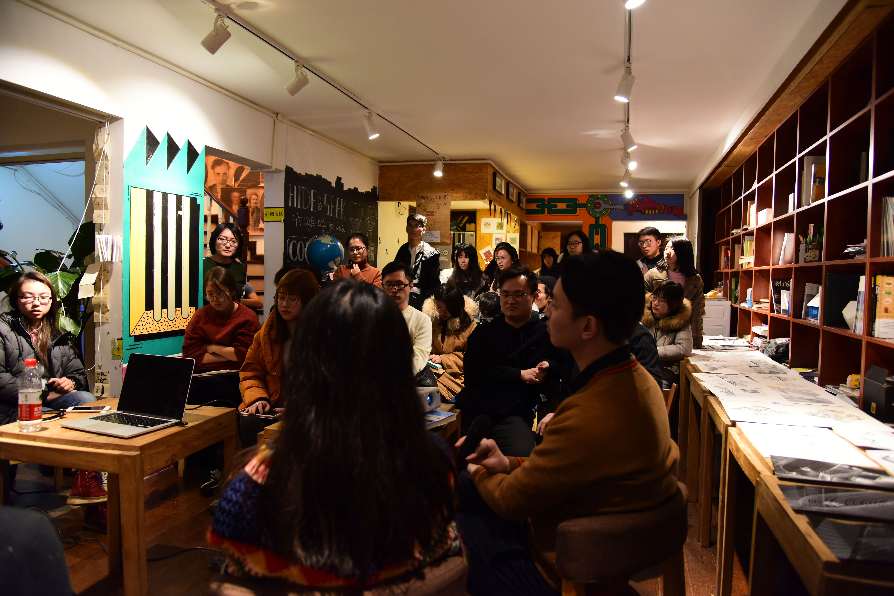
706文化沙龙希望能够秉承法国沙龙文化的原始精神
在706青年空间这个实体的公共空间中
试图通过活动本身去还原一种公共领域的气场和氛围
不同职业、专业、价值观的人在自由、开放、分享的氛围里讨论同一个公共议题，探索更多的可能性。
三、706社会青年派对
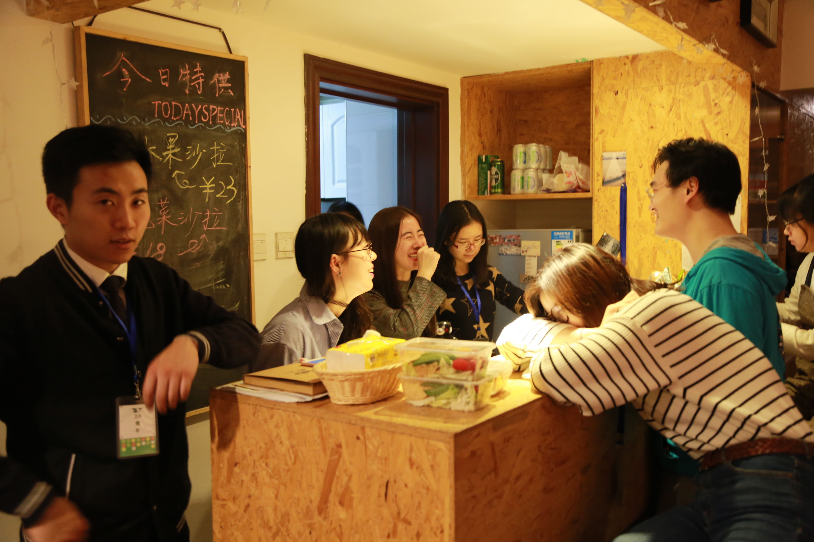
706青年派对是将青年聚、话题广场和论坛剧场等活动形式相结合的青年发声和社交活动
鼓励青年人对日常生活的观点进行表达、交流、讨论和反思
在观点的探讨和碰撞中，了解其他青年人的想法，结交志同道合的伙伴
四、706麻圆微沙龙
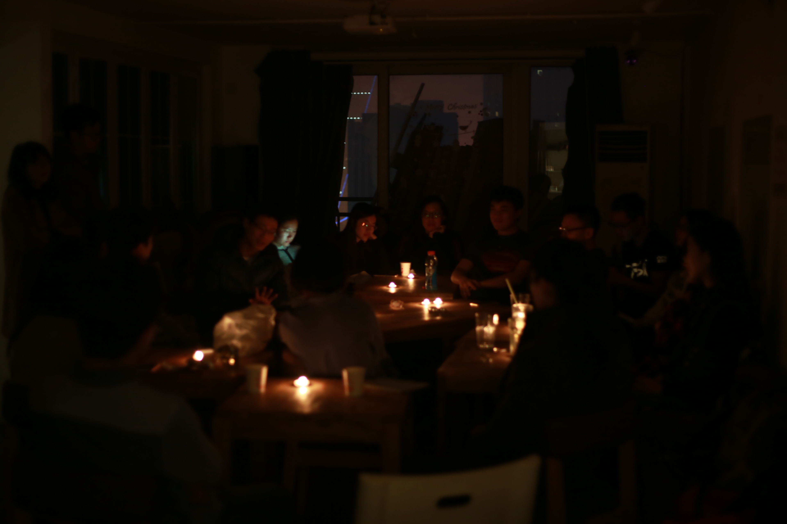
706麻园微沙龙是在706这个空间里面，让任何人在任何时刻，都可以发起话题
你可以是分享嘉宾或是话题主持人，也可以只是参与讨论
706通过“706麻圆微沙龙”为青年群体创造更多表达、交流和讨论的机会
五、706破格电影沙龙
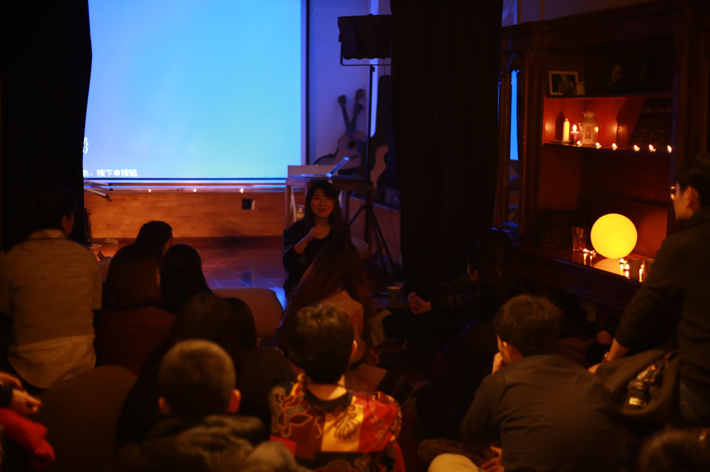
破·格电影沙龙 是每周末在706的固定节目，我们通过各种文艺片，通过小众的片子
不断探寻的理想和现实的观照，这里充满了松与温暖。
在这里，遇到志同道合又与众不同的伙伴、展开迫不及待或审慎而思的交流
破·格电影沙龙，希望成为你循环往复生活的一部分。
六、706小黑屋放映
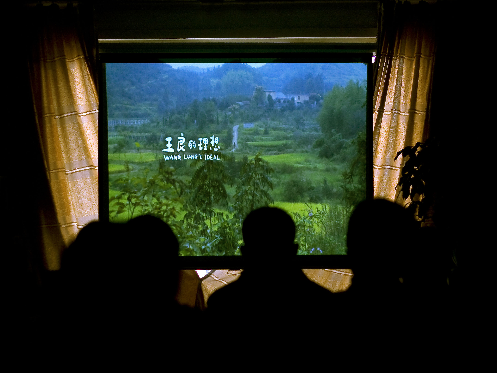
“小黑屋”是706一个房间的代号，在这个“小黑屋”里
我们放映青年导演的电影习作，鼓励导演在创作中有个性的影像语言表达
我们放映具有创新精神，但还未被广泛传播的独立电影作品
我们的放映是为了建立导演与观众、学者面对面的直接沟通、交流与学习
七、706生活大爆炸
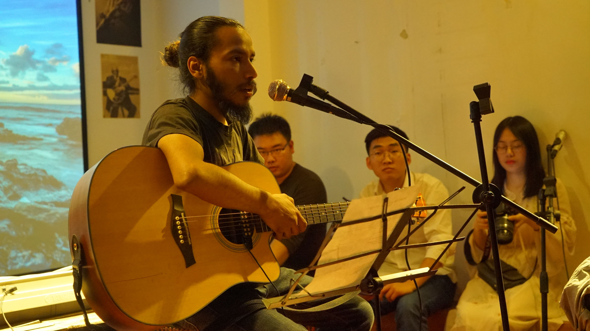
生活大爆炸是706隔周末的社交活动，它轻松、娱乐、休闲，没有很高的门槛
大伙放下学业和工作，一起来706青年空间休闲放松
有人在吧台喝酒闲聊，有人咖啡馆下棋；有人在厨房准备甜点，有人在桌前品尝葡萄酒；
有人在图书馆弹吉他，表演即兴话剧，有人只是来发呆坐坐，遇到几个陌生人，就跟他聊聊天……
八、706给我三分钟
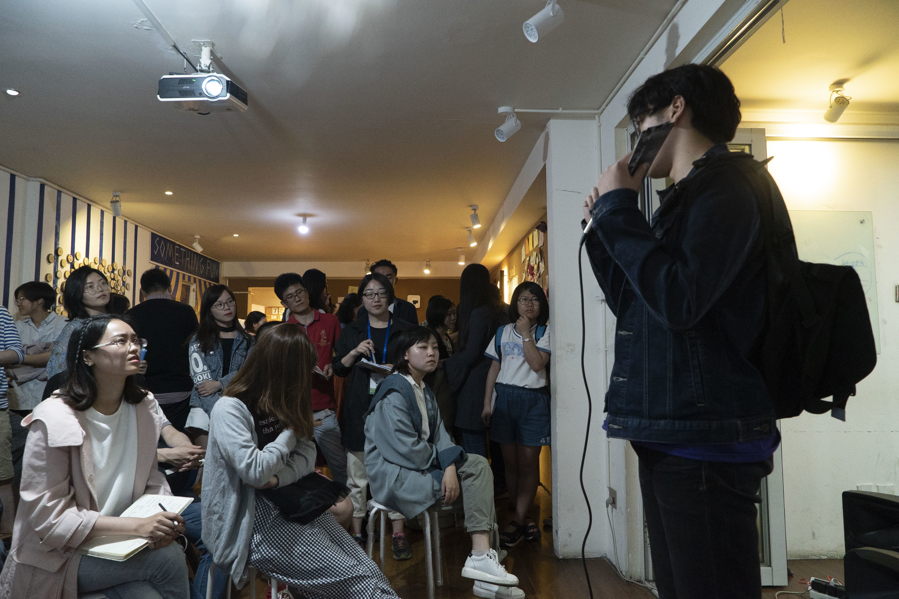
我们每个周末的晚上会在706进行“给我三分钟”
顾名思义，就是让每一个人都可以上台演讲属于你的“三分钟”
在这里，你将拥有一个属于你的讲台，我们就是你忠实的听众
这三分钟，我们全权交给你，你说，我们听。于思维碰撞中，找到适合自己的表达方式。
九、苏格拉底式对话
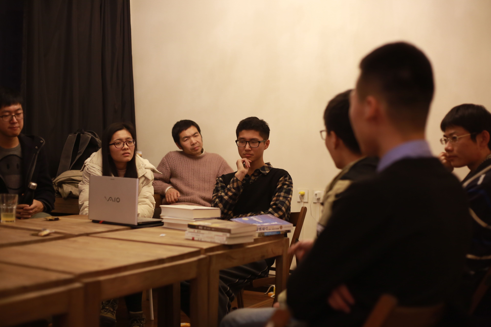
苏格拉底式对话致力于在日常生活中发现和提出意义问题
然后通过一种协作、对话的方式来获得意义问题的解答
这是一场思辨者的盛会，这也是你锻炼自己思维的最好的时刻
一起来思辨吧！爱智慧的人都在这~
十、同道学园 I 政治哲学读书会
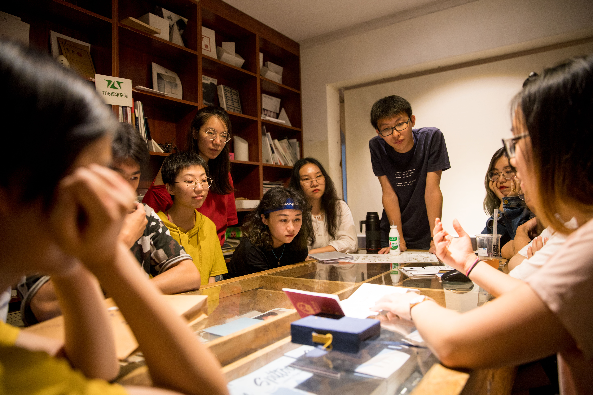
一群来自五道口周围高校的喜欢哲学的同学凑在706一起精读哲学经典著作
从古希腊哲学到卢梭、密尔，康德、罗尔斯，我们沿着人类思想史的脉络
大家在分享和讨论中共同提高智识、在友爱中求真
十一、706客厅对话
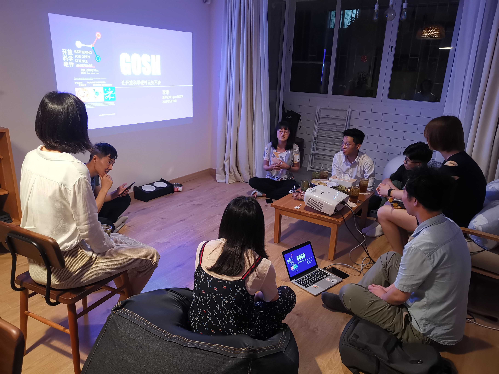
706客厅对话是一种解决分歧的简单方法，这是对话专家开发的一种对话模型
目的是对于撕裂的社会，来自民间的回应
希望让有不同观点，不同教育背景的人，可以有所交流，可以跨越分歧
至少促进理解，获得更多的共识
十二、706共学小组
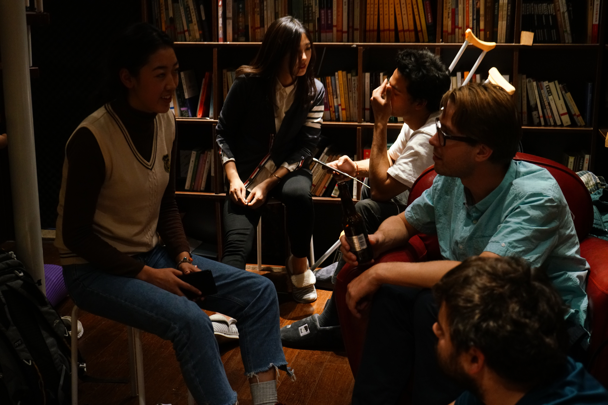
706共学行动小组是对特定的材料进行学习、并从彼此的生命经历、学科背景中学习的实践
我们会在行动小组当中开展对“共学”可复制模式的探索
十三、706写作工作坊
706 写作工作坊是一个线上青年写作者社区
写作者们每周周末会参与 3 小时线上讨论，交流彼此的作品并相互提出修改建议
工作坊目前根据不同的写作文体，已建立 ：影像组、影评组、现代主义小说组、现实主义小说组、类型小说组、科幻组、新诗组、非虚构组。
十四、706漫游计划
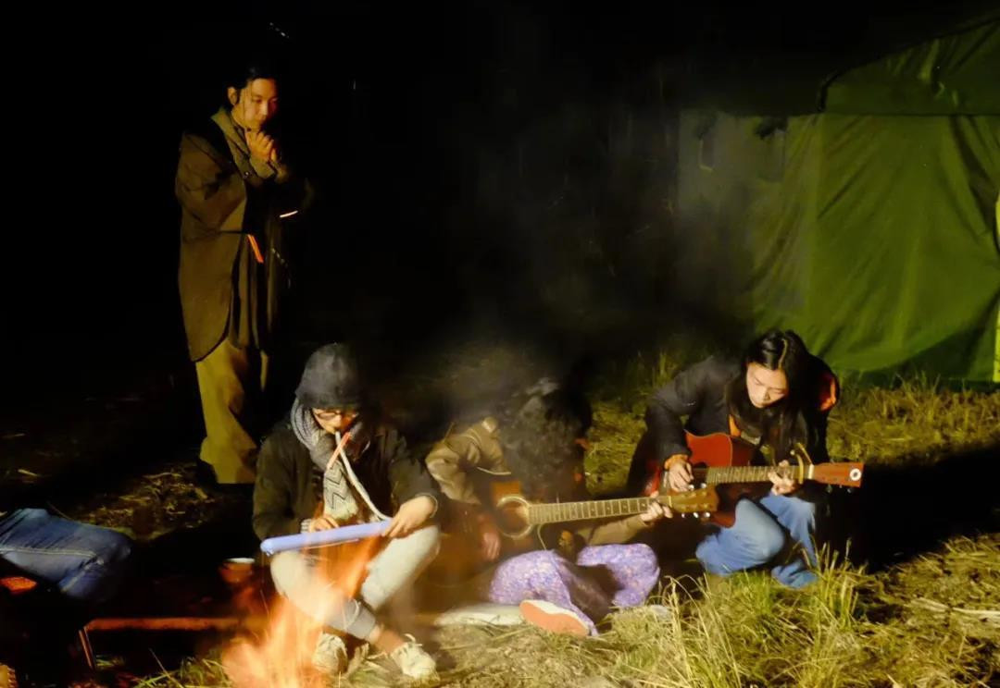
706漫游计划，是“漫游青年”组织的一个系列野外活动
在自然中，在田野中，在山谷中，在海岛上，在乡村和小镇上来寻找
这是我们的探寻之旅，也是我们塑造共同体的旅程
我们会以“自治”和“共创”的模式来完成这些为期10天左右或更长的“漫游计划”
十五、706独立出版展
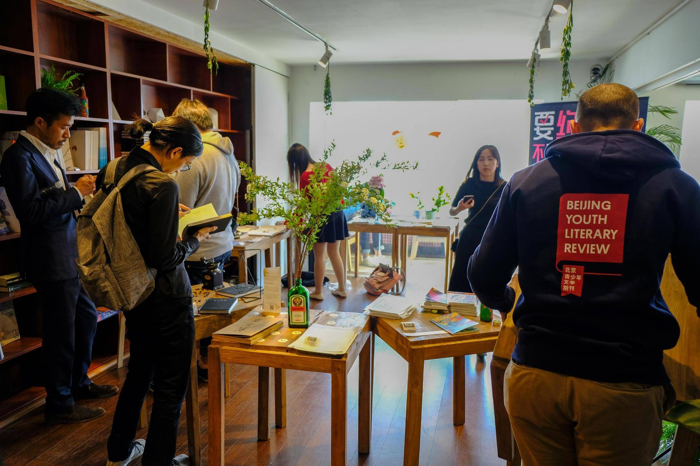
706独立出版展，每年会征集到杂志、书籍、作品集、报纸、海报、磁带、CD等等进行展览
706独立出版展，本质上不光是一次独立出版的展览
它更像是一种城市生活方式的探索，一种新的空间和人际关系的寻找
已经对未来更加美好城市生活的追寻
十六、706新空间主义
“新空间主义”是706提出的公共空间理念
我们批判异化的日常生活，重构可以栖居生存空间。
我们结构性地反思社会议题，梳理706及其他青年空间的实践经验
探索共同居住模式与空间设计，解放个体的创造力与空间的异质性，创造共享、共治的社群
十七、深夜食堂
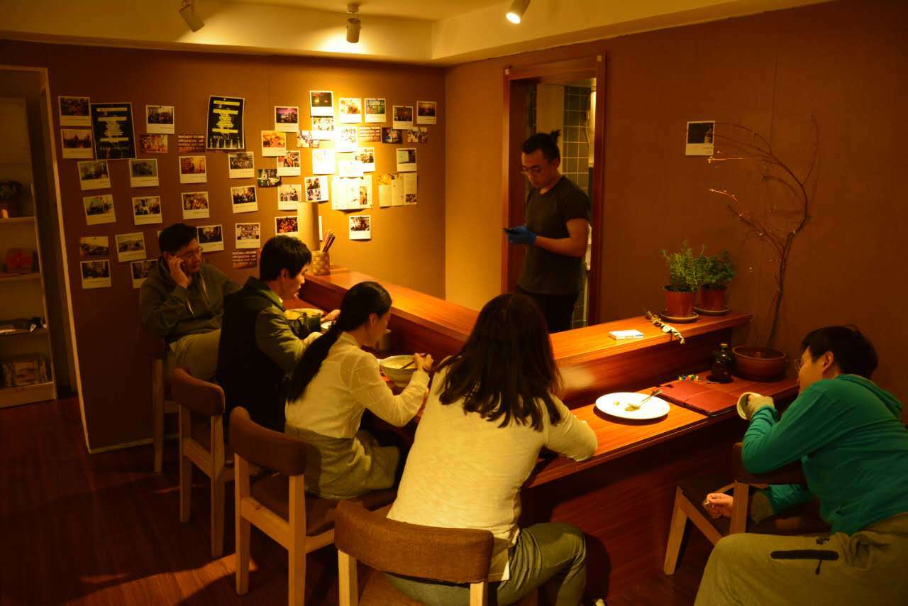
706深夜食堂是706的一个周末和食物相关的一个夜聊会
就着简单的食物、淡淡的清酒、失眠后的清汤面以及彻夜加班后的炒饭
只是听着、品着大家各自异乡人的故事，或许你也可以在其中或多或少看到自己的影子。